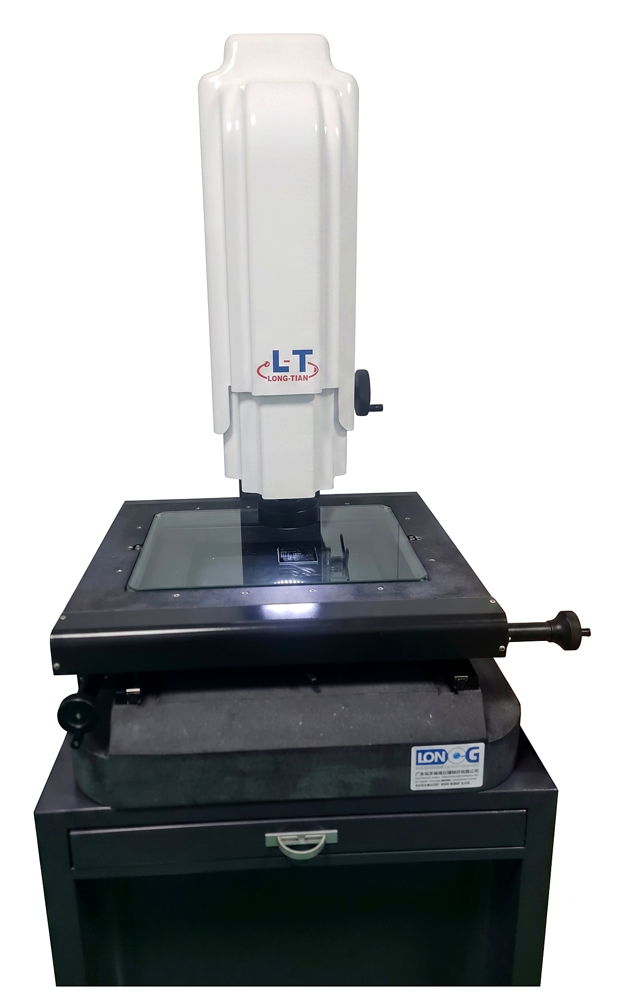

影像测量仪（Vision Measuring Machine），用于高精度检测模切产品的2D尺寸。

2D影像测量仪（VMM）是一种非接触式测量设备，通过相机及专用影像测量软件确定产品的点、线、圆、圆弧、椭圆、矩形、槽、距离、坐标及公差等尺寸。它是QC/IPQC/OQC部门的主力检测设备，确保测量结果准确、可追溯。
只有经过设备、测量软件及基本计量知识培训的人员方可操作；不得擅自拆卸、调整零部件或使用非原厂配件；避免将设备放置于振动源、强电柜或多尘潮湿环境附近。